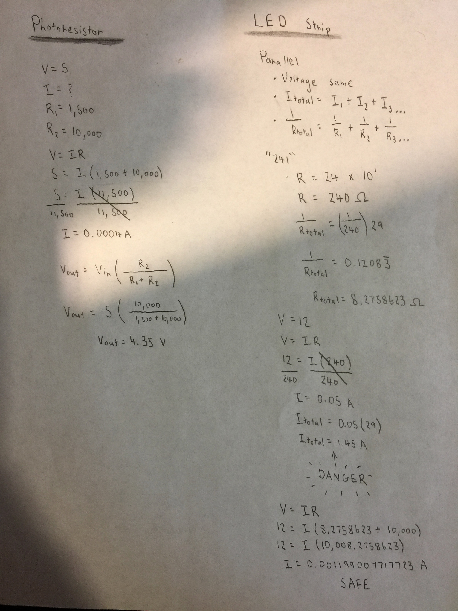
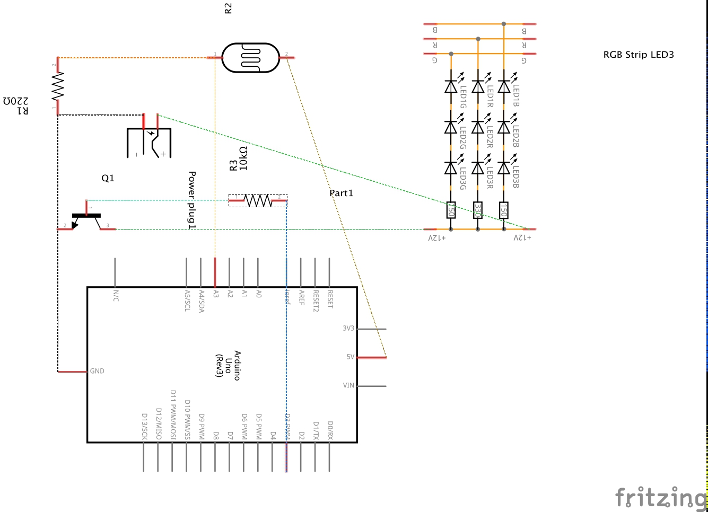
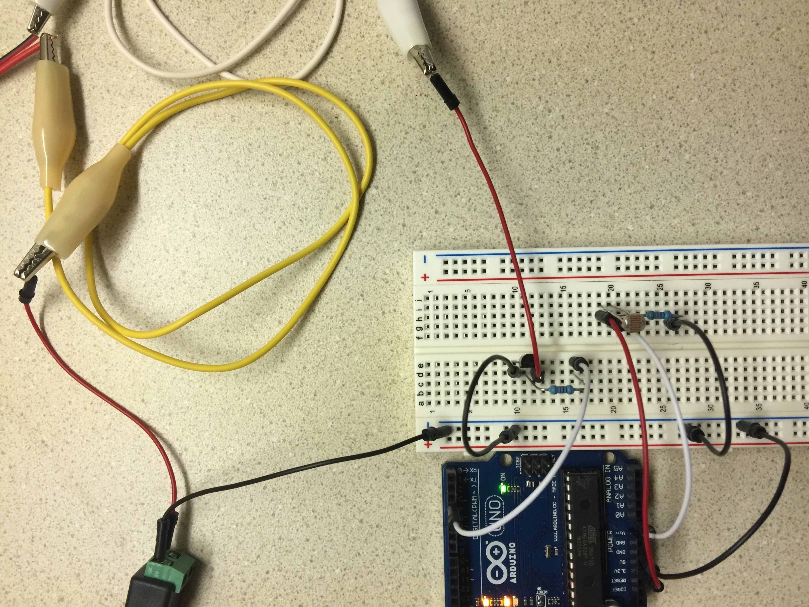

Steven Yong's Assignment 4!
Schematic
 I only calculated the values for the minimum resistance of the photoresistor because that is when it could pose a danger to my Arduino microcontroller. The calculations confirm that using a 10K Ohm resistor is safe. My calculations for the LED strip showed that without any resistors it would fry my Arduino to oblivion, so I calculated the current using a 10K Ohm resistor and it pushes it into safe territory. The volts is also safe since the maximum for the Arduino Uno R3 is exactly 12. This week I was initially overwhelmed with the math of the LED strip, but taking it one step at a time I think I was able to work through it correctly with the help of Google. Snow got in the way of office hours this week, so hopefully Jasper or Kartika can answer two questions I had about this the next time I see them.
Circuit
This week was indeed dangerous. I took extra precautions and it worked out the first time (the in-class session helped a ton as I was piecing it all together), but things took a turn for the worst quite rapidly. (More on that at the end.)
Firmware
const int photoresistorPin = A0; //Give pin A0 the name photoresistorPin.
const int ledstripPin = 3; //Give pin 3 the name ledstripPin.
void setup() {
pinMode(photoresistorPin, INPUT); //Initialize the photoresistorPin as an input.
pinMode(ledstripPin, OUTPUT); //Initialize the ledstripPin as an output.
Serial.begin(9600); //Set the baud rate to 9600.
}
int photoresistorValue = 0; //Create a new integer variable and give it the name photoresistorValue.
int processedValue = 0; //Create a new integer variable and give it the name processedValue.
void loop() {
photoresistorValue = analogRead(photoresistorPin); //Read the value from the photoresistorPin and assign the value to photoresistorValue.
processedValue = map(photoresistorValue, 0, 1023, 0, 255); //Use the map function to convert the values from the photoresistor to 8-bit RGB.
Serial.print("The photoresistor value is: "); //Print this in the serial monitor.
Serial.print(photoresistorValue); //Print the photoresistorValue in the serial monitor.
Serial.print("\t The processed value is: "); //Print this in the serial monitor.
Serial.println(processedValue); //Print the processedValue in the serial monitor.
if (processedValue < 180) { //If the processValue is less than 180, execute the following.
for (int fadeValue = 0; fadeValue < 255; fadeValue++) { //Start a for loop starting at 0, ending at 255, and increasing in an increment of one.
analogWrite(ledstripPin, fadeValue); //Assign the value from the for loop to the ledstripPin.
delay(5); //Delay by 5 milliseconds.
}
}
else { //For all other cases, execute the following.
digitalWrite(ledstripPin, LOW); //Set the ledstripPin to low (off).
}
}
The coding was pretty quick this week since it's last week's code, but simpler since I'm not using an RGB.
Circuit's Operation

This week was not a good week for me. When the professor said "danger zone" she meant it. The first mistake I made was moving around high voltage components without unplugging them first. As I was moving around my tangled wires for the perfect shot, my positive alligator clip attached to the LED strip lightly grazed my Arduino (ICSP pin for the ATmega328). The lights stopped working. The programmer stopped working. The reset button stopped working. After several hours of desperate troubleshooting I can now safely assume that, that one small mistake fried my entire microcontroller. Yikes!
Time for the second mistake. Fast forward to coming home with my new Arduino. I was confident that I was not going to make another mistake. I've learned. I've adapted. I've evolved. I plugged everything in and nothing was working. The photoresistor section was outputting into my serial monitor so it had to be that pesky high voltage section. What's this? My transistor is getting hot. Very hot. Is it broken? Let me try replacing it. Even hotter. So hot that it started to smoke and I could smell burning plastic. Now I know it wasn't because I was connecting something into the wrong place (such as the collector, base, and emitter). I checked more than fifteen times. It turned out the two alligator clips were too close together and were touching. After separating them out and giving them some breathing room, everything worked perfectly. I now loathe alligator clips.